[ Home ] [ Travel ] [ Photography ] [ Pets ] [ Games] [ Rowing] [ Physics ]


Cruising on the Caribbean Princess
Travel
Cruises
Past Cruises (Diaries)
Future Cruises
Rogues Galleries
Land Trips
Diaries (Land Trips)
Hawai'i - Big Island - 04'01
Hawai'i - Maui - 05'02
Hawai'i - Big Island - 04'03
Hawai'i - Kaua'i - 09'04
Hawai'i - Big Island - 04'06
Hawai'i - Maui - 04'06
Mainland China - 05'07
Phoenix, Arizona - 12'07
Greek Isles - 05'08
Hawai'i - Kaua'i - 09'08
Hawai'i - Big Island - 09'09
Hawai'i - Maui - 05'12
Hawai'i - Big Island - 04'13
Ireland - 08'13
Mexico - Cancun 11'13
France/Belgium/Lux 07'15
Hawai'i - Big Island - 05'17
England / Wales - 06'17
Hawai'i - Big Island - 09'19
Photography
Cameras
Underwater
Pets
Tara
Blackie
Whitey
Muffy
Ollie
Rusty
Fluffy
Rufus&Dufus
Games
Rowing
Physics
Rating (out of 5): Ship  Food
Food  Service
Itinerary
Service
Itinerary
Marjorie booked this cruise "last minute" (ie. October) as she got a really good deal on it. We hadn't
been to the Western Caribbean for several years, nor had we been on the Caribbean Princess. Belize
would be a new port to us, too. We had flown through Houston before, but this gave us a chance to see
Houston and Galveston prior to the cruise. Also, it was -20 or so in Calgary with
lots of snow and ice, so what better time to head away for some warmth. The ship was fine and the
service was very good. However, the food was very inconsistent. Hence, I give the food 4 stars this time.
Pre-cruise (Dec 4) - Travelling to Houston
We left for the airport on Dec 4th about 10 AM. We parked at the Park2Go lot and bused
over to the terminal building. We went through security and customs preclearance and
were at the gate in plenty of time for our 1:00 PM flight. We boarded on time but then sat
on the tarmac for 1.5 hours while they worked on starting one of the engines that had some
freezing problem. As a result we landed in Houston about 7:30 PM in the dark. We grabbed
our luggage and loaded it into our rental car (Yaris). Then we promptly got lost trying to get onto
the main south freeway. After an hour of driving around the airport surrounds, and stopping
at 4 service stations to get vague instructions, we finally found a kindly cop who led us
onto the freeway. It was about an hour drive south to our hotel in Webster, near the NASA
Space Center (and the cruise docks). We had directions to the hotel from Exit 26, but when
we got to the exit it was closed for roadwork! We had to take Exit 25 and work our way back.
We eventually found the hotel and checked in. It was 10:30 and we hadn't eaten since
breakfast. Everything seemed to be closed, but we found a Target that was still open and
grabbed some snacks. Then it was off to bed.
Pre-cruise (Dec 5, 6) - Two days in Houston
Dec 5: The next morning it was about 24 degrees and very humid. However, it was
also very foggy. The hotel breakfast was pretty good - the typical DIY breakfast buffet.
I made my own waffle with the premix batter.
We had decided to visit the town of Galveston, about 40 minutes away. We drove down I-45 and onto the
island. Once there, we could not really see the water due to the heavy fog. We drove out onto Pelican
Island, but there wasn't much there. Back on the main island we stopped at
the old section of town, parked the car, and wandered around. We found a tourist info place and
with their help decided
on a lunch place (the Saltwater Grill) and then the local aquarium. Lunch was great - seafood linguini. We
drove along the ocean (I think it was there) on Seawall Drive to Moody Park where the aquarium was
located. It was actually a very large park with the aquarium being only one of several sights there.
The aquarium was really excellent and we spent a couple of hours viewing the exhibits.
When we entered the building it was 24 degrees out; when we came out later the temperature
had plunged to 18 with little humidity. Heading back home we stopped at a Kroger's Grocery and
Specs Liquor Store to get some snacks and Raspberry Brandy.
We returned to the hotel to relax. Then Marjorie headed off to shop while I visited the fitness center.
We also spent some time using a computer in the business center which was complimentary. Every Tuesday,
Wednesday and Thursday there was an included dinner at the hotel with beer and wine.
We had missed it the night before as we arrived too late (it was lasagna). Tonight it was a taco and salad bar.
Very good! We wandered around the neighborhood later and then did an early to bed.
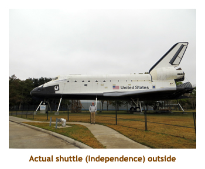
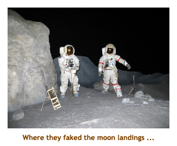
Dec 6: The temperature dropped some more and we woke up to 6 degrees.
Brrrh! Today we planned to visit the Johnston Space Center just down the
road from us. We did the DIY breakfast thing and headed off to NASA. We
arrived about 10 AM. The main museum building featured displays honouring
all of the US space missions and the astronauts. It was very well done with
lots of examples of space paraphenalia. There were also a couple of theatres
running movies, plus live shows including a talk by a real astronaut (we
had Duffy, veteran of 4 shuttle missions). The movies were excellent. We
also did a 1.5 hour train tour of the NASA buildings taking us to the "Mission
Control" room, the huge simulation room (with mockups of capsules and the
space station), and a huge building housing an enormous Saturn V booster
rocket. The train was open to the weather and it was raining off and on.
We froze sitting on the wet seats! However the trip was really worth it.
It was about 3 PM by the time we had completed the exhibits, the movies
and the train ride. We decided to do an early dinner and drove to the Red
Lobster just after 4 PM. We had an excellent shrimp dinner. Love those biscuits!!
Afterwards we did some shopping at Macy's and JCP and then headed back to
the hotel to relax and warm up.
| 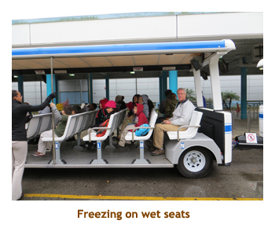 | 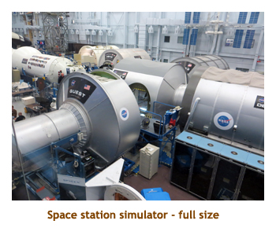 | 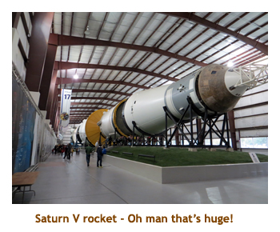 |
Day 1 (Dec 7) - Boarding in Houston
Today was another cold day, about 2 degrees. Although we were just a short distance from
the cruise dock, we had to return the rental car back to the airport.So, we did the DIY breakfast, checked
out, and then headed north to the airport, about an hour away. We arrived at the car rental place about
9 AM and shuttled to the terminal building. We walked to the United Airlines baggage claim to
meet the Princess personel. We had
purchased transfers to the dock with Princess. We were boarded onto a bus by 10 AM and then drove
the one hour back south again - this time to the cruise dock. It was bitterly cold, damp and windy.
There was a large lineup of passengers outside of the cruise terminal building, shivering in the cold.
However, being Elite, we got to walk straight into the heated facility and check in. After check-in
passengers were given numbers and had to wait for their number to be called in order to board. However,
once again we were able to just walk straight onto the ship. Being Elite has it's benefits! On board,
we went straight to our room to drop off our carry-ons. Then
we evaded the crowded buffet area and headed on down to the main dining room for a formal
lunch away from the crowds - again thanks to being Elite. Woohoo! Our bags arrived shortly
after lunch. Muster was at 3:30. Our sailaway was delayed from 4 PM to 5 PM due to some
late passengers. By chance we were sailing with a couple of Marjorie's clients, Kurt and Cheryl, who we had
met through the Calgary Humane Society some years ago. We met them for dinner.
I had the lamb roast. We skipped the entertainment and did an early to bed.
Day 2 (Dec 8) - A Day At Sea
We woke up at 7 AM to sunshine and 24 degrees! We were heading south!
We did breakfast in the main dining room. At 9:15 we went to a future cruises
lecture to see what was new. At 10:30 we did the first trivia session of the cruise.
Once again we showed our prowess at choosing smart partners (just one
couple, Craig and Jean, so we played with 4 players) and went on
to win some Princess drink bottles. At noon, we met K&C at the Crown Grill
for the "sea days only" pub lunch. Fish and chips of course! After some
wandering around the ship we went back to our balcony for a read in the
sunshine, then I went up to the gym for a rowing workout. Afternoon
trivia was at 4:30 and we came second which we were quite happy about.
It was formal night tonight and once again I wore a tie and sweater
meaning I could leave my suit and good shoes at home. We ate agin with
K&C. I had shrimp and scallops on skewers. Delicious! The entertainment
was song & dance stuff so we skipped it.
Day 3 (Dec 9) - Cozumel, Mexico
We were up by 7 AM and it was a sunny warm day. During breakfast a storm came through
and it poured in rain, but that soon cleared up and we had a mainly sunny day for the rest of our stay.
We were one of four ships in harbour, so
Cozumel would be hopping. Our friends Dan & Sue from our Tahiti cruise had recommended the
snorkeling at the EL Presidente Hotel (Intercontinental) just south of the cruise docks.
Marjorie had emailed the hotel (well before the cruise)
and explained that she was a TA, so the hotel had invited us for a 10 AM tour plus the use of their
facilities for the remainder of the day. We took a cab from the ship to the hotel and met Clara,
the manager lady, at 10. She showed us through all the different categories of rooms and then through
the beautiful surrounding grounds. It was really a nice hotel. I think the hotel was only partially filled
as we saw almost no guests around and about. After our tour, we headed to the beach and
snorkeled in two different snorkeling areas (marked by buoys). There was a fair variety of fish and it
was an easy swim. From the beach we could see the docked ships. I think I could have swum back
to the ship (given an hour or so). We ate our cookies and Coke while we warmed up on the beach.
At about 2 PM, we called for a cab and headed back to the ship. We had a light lunch (quiche and
salad) at the International Cafe and then relaxed for a while. Afternoon trivia was at 4:30 - we did
pretty crappy this time. Law of averages! I had pulled pork for dinner. The entertainment was a
comedian - he was OK, some good stuff some not so good.
| 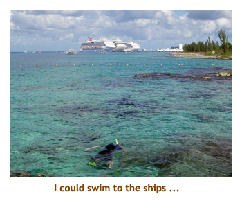 | 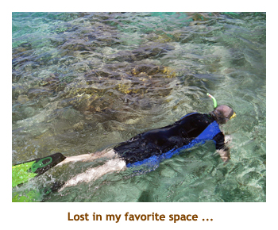 | 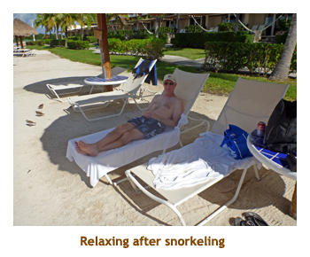 |
Day 4 (Dec 10) - Roatan, Honduras
We were up at 7 AM to another warm, sunny day. We had booked a snorkeling excursion
for the morning. We had breakfast and then headed off to our 9:15 meeting time onshore. This
cruisedock and shopping area was brand new (2 years old) and wasn't here when we visited
in 2010. There was even a chair lift line taking passengers from the cruise dock to/from the
nearby beach. We boarded a catamaran and motored for half an hour to the snorkeling spot.
The snorkeling was so-so - not a lot of fish or colourful coral. Typical of the Caribbean though.
One goal I have when snorkeling is to find something we've never seen before. This time we
saw several large fish that turned out to be ocean triggerfish. Never seen them before!
On the way back they did a slow tour along the coastline of the island while they served a
chicken and rice lunch with rum punch. We passed luxurious resorts and dilapidated fishing
villages - quite a contrast! We were back to the ship by 1:30. We did a salad top-up at the
International Cafe and then read for a while. Afternoon trivia was at 4:30. Did lousy! Once
again we had a nice dinner with K&C - I had the scallops and shrimp in cream sauce. We
skipped the entertainment.
| 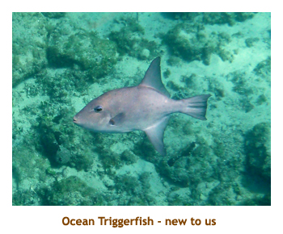 | 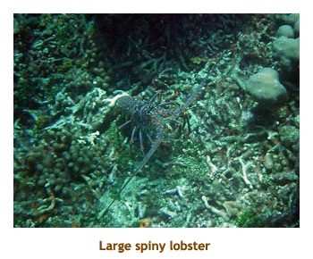 | 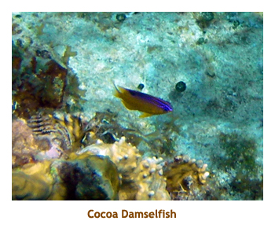 |
Day 5 (Dec 11) - Belize City, Belize
Today was a big disappointment. Belize was the one place that we had never been to
before and the snorkeling was supposed to be very good. However, it poured in rain most
of the day and the sea conditions were choppy and murky. Hence, a lot of tours were canceled
including some on land. It was still very warm though at 26 degrees. Our tour wasn't until 12:15 so
we weren't aware of the cancelations until we showed up after lunch and were told it was
canceled. Anyway, we had a good morning spent breakfasting late and then wandering
around the ship. It was a tender site so not easy to nip into town and back. After our tour
was canceled we decided we had to set foot in Belize, so we tendered ashore and wandered
some shops in the pouring rain. We were back on board by 2:30. I went up to the gym for a
good row. At 4:30 trivia our usual team mates didn't show up so we located another lonely pair
who turned out to be trivia wizards (Tom and Janie). We were back to winning ways and
earned some Princess pens. For dinner I had sea scallops (again!). Later there was a
magic act with the big illusions. I think I prefer the sleight of hand magic rather than the
mechanical magic, but I still enjoyed the show.
Day 6, 7 (Dec 12, 13) - Two days at sea
Dec 12: And now we come to the final two sea days of the cruise. We were up at 7:00 and it was a warm day (26 degrees). It was mainly sunny with a few passing showers. We had breakfast at 8:00 and then read for a while. At morning trivia our lost couple appeared as well as our latest partners, so we were 6 strong. We did well and earned some more pens. To celebrate, I went to the gym. We had lunch in the MDR. There was a wine tasting at 3:00. The wines weren't the greatest, and most people seemed to talk through the long expositions. However, it was free for Elite so we felt we had to attend. At afternoon trivia we were 6 again and tied for first. We lost the tie breaker. For dinner I had lobster and giant shrimp. We skipped the entertainment.
Dec 13: Up at 7:00. We were sailing north and today was cooler at 22 degrees.
We had breakfast in the MDR and then headed to the junk sale in the Coral dining room.
We both bought t-shirts. Morning trivia was fun, but we only did mediocre. After lunch they
had an "egg drop" contest in the atrium. Entrants had to build containers that would see
a raw egg safely through a 3 storey drop. There were 15 teams and the containers seemed
to feature parachutes, umbrellas, balloons and tissue paper. The drop was made at
the central atrium, three stories up. Only 2 of the 15 eggs were broken, so the engineers
did a marvelous job of packaging their eggs. We read for a while and then did the final
afternoon trivia. My daily notes stop at this point, so I can't remember how we did at
trivia. I do remember having roast turkey for dinner. No entertainment.
Day 8 (Dec 14, 15) - Houston and Home

We got up early today as we had to be off the ship early. We were surprised to find that we weren't even docked yet. In fact we were sitting outside of Galveston shrouded in fog. We had an announcement that we had to wait for the fog to clear before making our way up the channel to Houston. Oh, oh! That meant we would miss our 1:00 PM flight home. Marjorie phoned United and found out that the earliest flight we could get was the 8:30 AM flight on the next day. There was a three way finger pointing between Air Canada, Aeroplan and United Airlines, but after a couple of hours on the phone, Marjorie got it sorted out. We finally left the ship about 11:30 and were transported to the airport. There, Marjorie booked us into the Hilton DoubleTree for $99. The hotel shuttle picked us up and we were at the hotel by 2:00. We did a walk around the neighbourhood and then ordered in Chinese food for dinner.
After a great sleep, we were up at 5:30 AM for the 6:30 shuttle to the airport. Our flight home was on time. We landed about 1:00 PM. We picked up our car from Park2Go and drove home. The kitties were happy to see us and the house was fine.